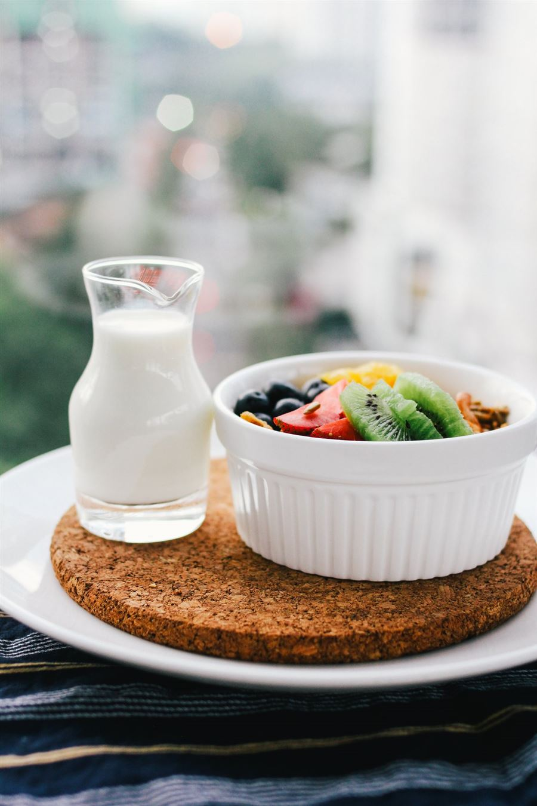
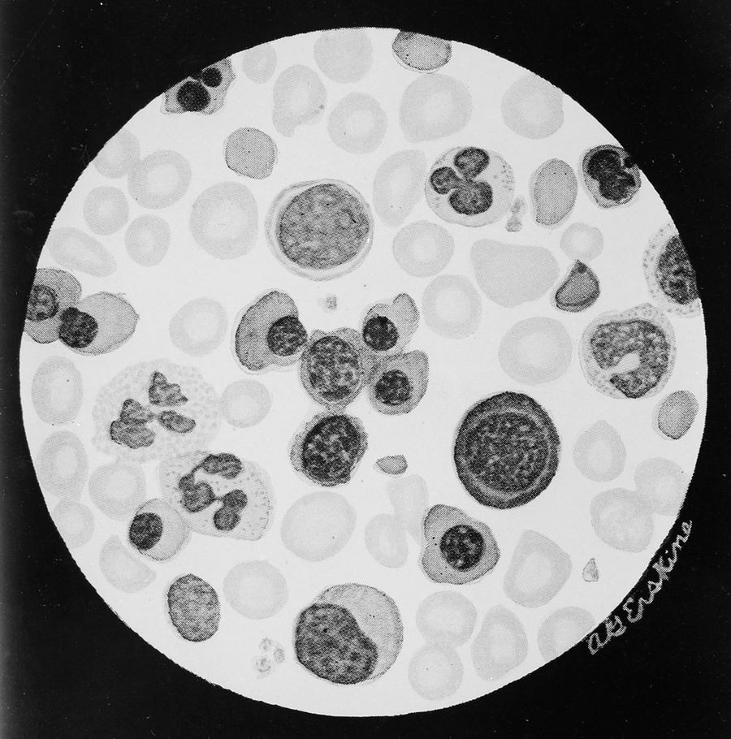
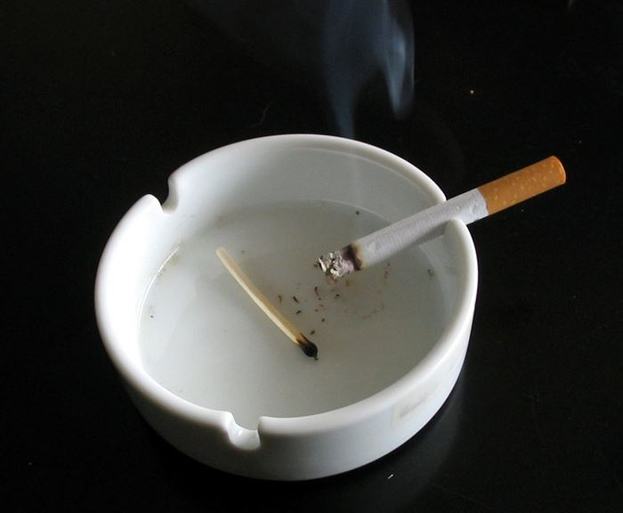
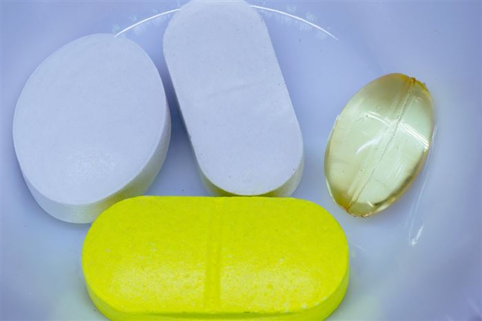

Особенности питания · Изосерологическая несовместимость · Зависимости матери и плод
Особенности питания при патологии беременности

Беременность перестраивает обмен веществ: растут потребность в энергии и нутриентах, изменяется толерантность к глюкозе, накапливается жировая ткань. При патологии беременности диета становится не фоном, а лечебным фактором: она снижает риск преэклампсии, гипергликемии, избыточной прибавки массы тела и дефицита микронутриентов.
Общие принципы
Дробное питание: 3 основных приёма пищи и 2–3 дополнительных, перерывы 2,5–3 часа, между последним приёмом пищи и первым утренним — не более 10 часов (профилактика ночной кетонурии).
Еженедельный контроль прибавки массы тела; при ожирении и патологической прибавке — снижение калорийности, но не ниже 1800 ккал/сут.
Достаточное количество белка, пищевых волокон (≥28 г/сут), овощей и фруктов; полный отказ от алкоголя, ограничение кофеина, исключение сырого мяса/мягких сыров и проростков (профилактика листериоза).
Гестационный сахарный диабет
Диетотерапия — старт лечения ГСД: исключение углеводов с высоким гликемическим индексом, легкоусвояемых углеводов и трансжиров; суточное количество углеводов 175 г или не менее 40% расчётной калорийности под контролем гликемии и кетоновых тел мочи.
Распределение углеводов в сутки: завтрак 15–30 г, второй завтрак 15–30 г, обед 30–60 г, полдник 15–45 г, ужин 30–60 г, второй ужин 10–15 г (итого 150–175 г). Перед сном — дополнительный приём 12–15 г углеводов для профилактики кетонурии. Разрешённые сахарозаменители: сукралоза, стевиазит. Аэробные нагрузки 20–50 минут 2 раза в неделю улучшают гликемию и снижают дозы инсулина.
При ожирении насыщенные жиры ограничиваются до 10% суточной нормы жиров; при сохранении гипергликемии после завтрака рекомендован белково-жировой завтрак.
Преэклампсия и гипертензивные расстройства
Диета с ограничением острой и солёной пищи (уровень убедительности C).
Контроль отёков: прибавка ≥1 кг/нед в III триместре и отёки лица — неблагоприятный прогностический признак тяжёлой преэклампсии; при этом преэклампсия без отёков опаснее, чем с отёками.
Ограничение натрия сочетается с достаточным потреблением калия (овощи, сухофрукты).
Патологическая прибавка массы, дефицит железа и фолатов
Избыточная прибавка: снижение калорийности за счёт «пустых» калорий (сладкие напитки, выпечка), контроль веса еженедельно, увеличение двигательной активности.
Железодефицитная анемия: продукты-источники гемового железа (красное мясо, печень), витамин C для улучшения всасывания негемового железа; препараты железа — только по назначению врача, так как избыток железа тератогенен.
Фолаты: профилактика дефектов нервной трубки — приём фолиевой кислоты до зачатия и в I триместр (в том числе при ожирении, сахарном диабете, приёме противосудорожных).
Запомните: любые ограничения в диете беременной должны быть согласованы с врачом — «диеты для похудения», голодание и строгие вегетарианские рационы во время беременности опасны дефицитом белка, витамина B12, железа и жирных кислот омега-3.
Изосерологическая несовместимость плода и матери. Резус-конфликт

Резус-изоиммунизация — наличие в крови Rh-отрицательной матери анти-Rh(D)-антител как проявление иммунного ответа при несовместимости крови матери и плода по системе Резус (чаще RhD, также C, c, E, e). Синонимы: резус-конфликт, резус-сенсибилизация. Гемолитическая болезнь плода (ГБП) — гемолиз RhD-положительных эритроцитов плода под действием материнских IgG-антител, проходящих через плаценту; проявляется анемией и увеличением числа бластных форм (эритробластоз, гемолитическая желтуха).
Этиопатогенез
Эритроциты плода попадают в кровоток матери через плаценту: в I триместре — у 5–7%, во II — у 15–16%, в III — у 29–30% женщин.
Первичный ответ — IgM-антитела: крупные, через плаценту не проходят. Затем образуются IgG (G1 и G3 взаимодействуют с Fc-рецепторами макрофагов) — они свободно проникают к плоду и вызывают гемолиз.
При первой беременности сенсибилизация обычно не успевает развиться; при повторных контактах с антигеном плода ответ быстрее и тяжелее (анамнестическая реакция).
Вне беременности сенсибилизация возможна при трансфузии Rh(+) крови, переливании компонентов, а также при потенциально резус-сенсибилизирующих событиях (амниоцентез, биопсия ворсин хориона, угроза прерывания, роды, внематочная беременность).
Клинические формы ГБП
Форма
Ведущий синдром
Желтушная
Гипербилирубинемия, желтуха с первых часов жизни, риск ядерной желтухи
Генерализованные отёки, асцит, многоводие, тяжёлая анемия — самая тяжёлая форма
Диагностика
Определение группы крови и Rh-принадлежности матери; при Rh(-) — определение Rh плода (неинвазивно по ДНК или по данным отца).
Скрининг антиэритроцитарных антител: при первом визите, в 18 и 28 недель; при положительном титре — контроль динамики (нарастание титра/avidity).
УЗИ: признаки анемии плода (толщина плаценты, многоводие, увеличение печени и селезёнки, отёки), допплерометрия средней мозговой артерии плода — неинвазивный маркер анемии.
При подтверждении тяжёлой анемии — внутриутробное переливание отмытых эритроцитов плода; определение Rh-принадлежности и прямой проба Кумбса у новорождённого, билирубин в динамике.
Профилактика (КР РОАГ, 2024): иммуноглобулин человека антирезус Rho[D] внутримышечно — в 28–30 недель Rh(-) беременной без анти-Rh-антител (если Rh отца/плода не резус-отрицательный); после родов Rh(+)-новорожденному — 1500 МЕ (300 мкг) желательно в течение первых 2 часов, но не позже 72 часов (допустимо до 10 суток). При объёме фетоплацентарного кровотечения 25–50 мл (тест Клейхауэра-Бетке) доза удваивается. Дополнительная доза — после инвазивных вмешательств, при прерывании беременности и антенатальной гибели плода.
Осложнения: тяжёлая анемия и водянка плода, преждевременные роды, гипербилирубинемия и ядерная желтуха, ДВС-синдром у новорождённого. Лечение при тяжёлой ГБП — внутриутробные переливания и раннее родоразрешение по показаниям.
Никотиновая, наркотическая и алкогольная зависимость при беременности: влияние на плод


Три главных тератогена: никотин · наркотические вещества · алкоголь
Зависимости матери — одна из немногих причин патологии плода, полностью предотвратимых профилактикой. Скрининг на вредные привычки обязателен на первом визите, а поддерживающая беседа — на каждом приёме.
Никотиновая зависимость (табакокурение)
Механизм: оксид углерода связывает гемоглобин (карбоксигемоглобина в крови плода в 2 раза больше, чем у матери), никотин спазмирует сосуды матки → хроническая гипоксия и фетоплацентарная недостаточность.
Последствия: выкидыши и мертворождения, ЗВУР (в 2 раза чаще), низкая масса тела, преждевременные роды, отслойка плаценты, перинатальная смертность +27%, синдром внезапной детской смерти.
Табачный синдром плода: специфический фенотип, церебральная ишемия, энцефалопатия; у 69,2% новорождённых — абстинентный синдром (тремор, гипервозбудимость, отказ от груди).
Пассивное курение и вейпинг тоже опасны (маловодие, апноэ, низкая масса). Бросать можно на любом сроке — риск ЗВУР снижается уже при отказе до III триместра.
Алкогольная зависимость
Безопасной дозы алкоголя при беременности не существует. Этанол свободно проходит через плаценту и гематоэнцефалический барьер; в первые 28 дней он цитотоксичен и формирует пороки развития, на поздних сроках — задержку роста и гипотрофию.
ФАС (фетальный алкогольный синдром): задержка роста, лицевые дисморфии (короткая глазная щель, тонкая верхняя губа, сглаженный носогубный желобок, микрогнатия), нарушения ЦНС (микроцефалия, умственная отсталость, поведение), возможны пороки сердца. Частота — 0,5–2,0 на 1000 живорождённых, при алкоголизме матери вероятность ФАС достигает 25–45%.
ФАСН (фетальный алкогольный спектр нарушений) — более лёгкие, но пожизненные когнитивные, поведенческие и дисморфические нарушения без полной триады.
Опиоиды: внутриутробная зависимость и тяжёлый абстинентный синдром новорождённого в первые 24–72 часа (тремор, икота, диарея, рвота, гипертонус), преждевременные роды и ЗВУР.
Каннабис: нарушение нейронной миграции, низкая масса тела, нарушения внимания и поведения.
Инъекционный путь — риск ВИЧ, гепатитов B и C с передачей плоду.
Что делать: полный отказ от алкоголя и никотина до зачатия и на всём сроке; отмена психоактивных веществ только под наблюдением врача (резкая отмена опиоидов опасна абстиненцией и гибелью плода). Никотин и алкоголь проникают в грудное молоко. Ключ профилактики — информирование женщины на этапе планирования беременности.
15 вопросов · три темы · 30 секунд на каждый. Проверь себя.